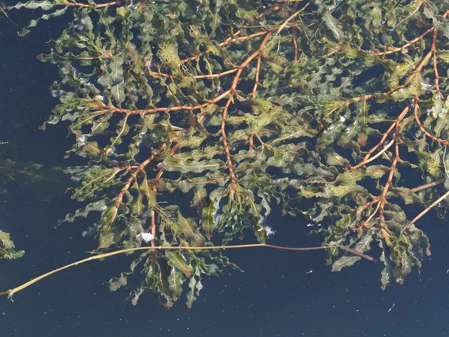

水生植物 · 植物界
菹草 Potamogeton crispus

眼子菜科多年生沉水草本，叶片边缘波状皱曲，秋冬萌发、春夏生长，夏季形成石芽休眠，是常见的水族箱水草。
- 分类
- 门被子植物门纲木兰纲目泽泻目科眼子菜科属眼子菜属
- 栖息环境
- 池塘、湖泊、河沟等静水或缓流水体，喜清澈、富营养
- 地理分布
- 广布欧亚与北美淡水水域，中国各地池塘湖泊常见
- 保护级别
- 暂无评估
物种志
菹草为眼子菜科眼子菜属多年生沉水草本，茎细长，长 0.5–2 米，多分枝。叶片带状，长 3–10 厘米，边缘呈波状皱曲，互生。花小，生于挺出水面的短穗上，花期 5–6 月；果实为小坚果。夏季植株形成坚硬的休眠芽（石芽），沉入水底越夏。
菹草广布于欧亚大陆及北美的淡水水域，中国各地池塘、湖泊和河沟常见，喜清澈、富含养分的水体。它的生长节律与多数水生植物相反：秋季萌发、冬春生长，夏季高温时形成石芽休眠，植株枯萎，石芽在秋季再萌发。菹草叶片波状、随水摇曳，是水族箱中常见的沉水水草，也可作鱼虾饲料和绿肥，并有一定的净化水质作用。
形态与习性
- 株高茎长 0.5–2 米，多分枝
- 花期5–6 月，花小，生于短穗
- 果期花后结小坚果
- 光照喜充足阳光
- 水分沉水生长，适宜水深 30–150 厘米
- 土壤塘泥底质
- 繁殖石芽（休眠芽）与断枝繁殖
- 主要用途水族箱水草、饲料、净化水质
趣味知识
- 菹草叶片边缘波状皱曲，在水流中摇曳，是常见的水族箱水草。
- 它秋季萌发、冬春生长，夏季形成石芽（休眠芽）沉入水底越夏。
- 石芽坚硬耐旱，到秋季再萌发成新的植株。
- 菹草可作鱼虾饲料和绿肥，也有净化水质的作用。